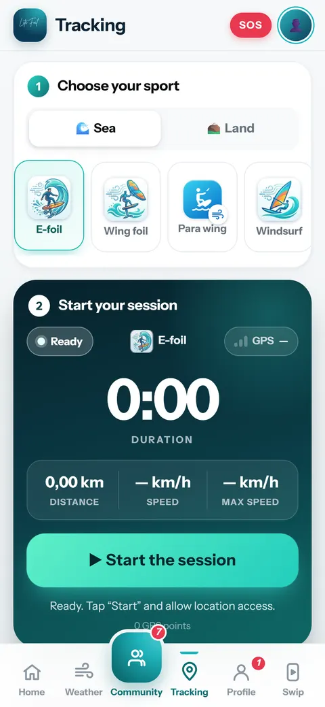
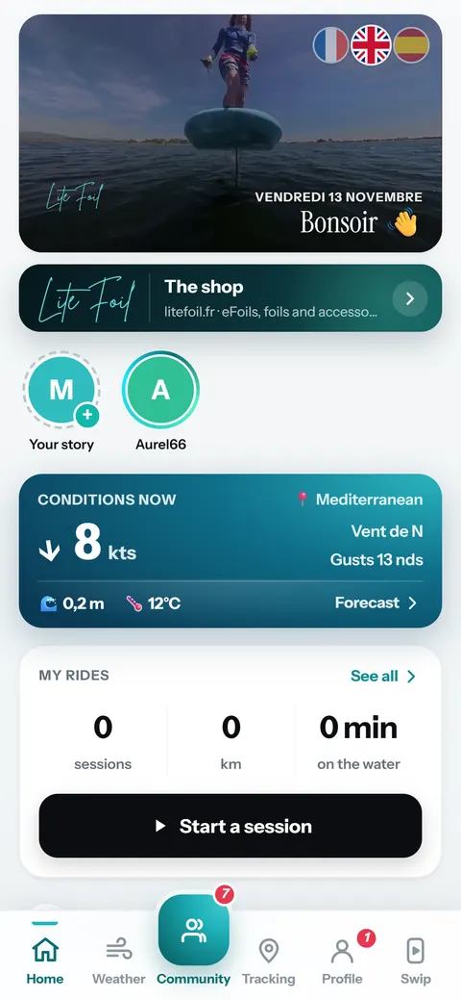
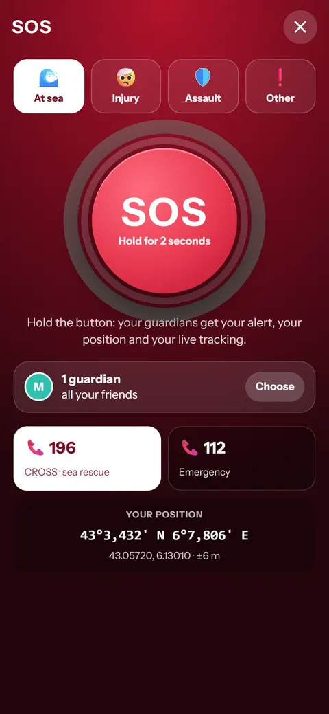
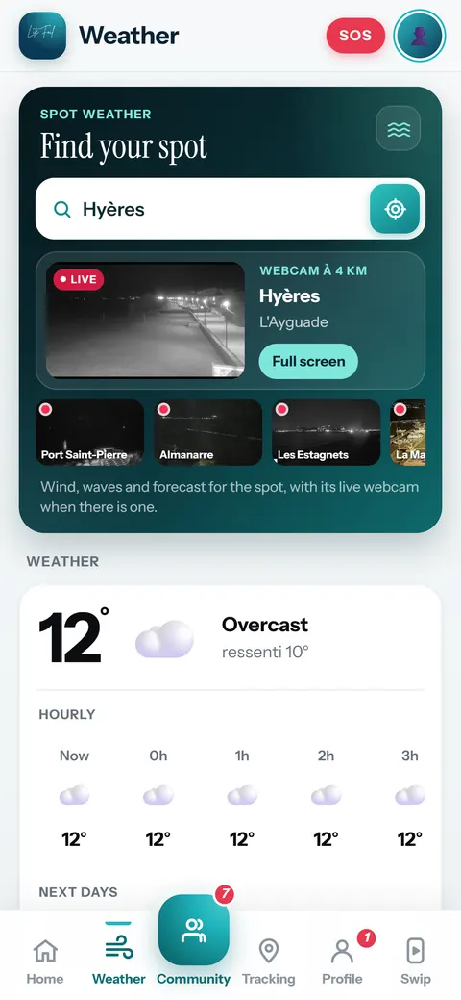
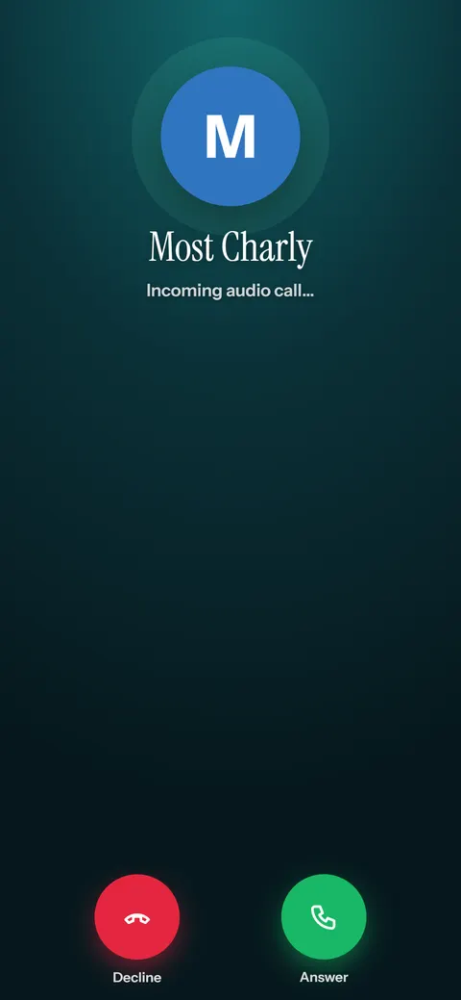
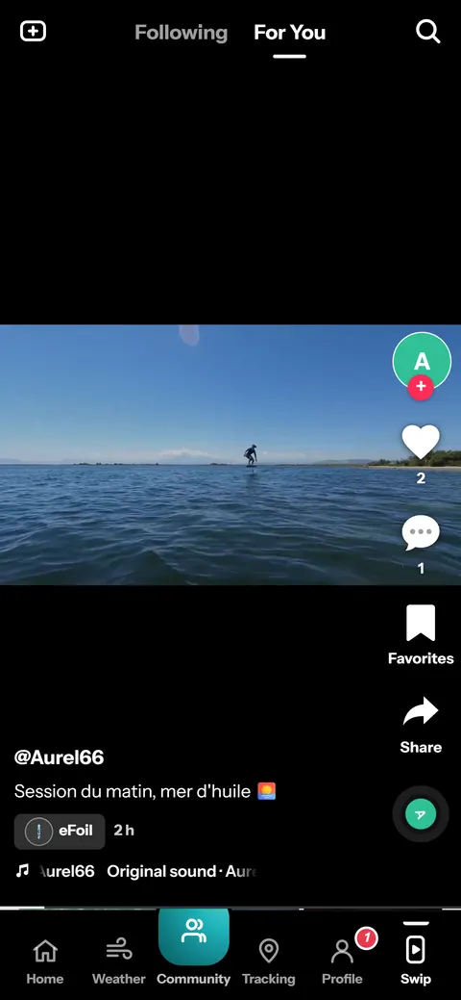

GPS-tracking van je sessies
Afstand, snelheid, topsnelheid en route voor meer dan 25 sporten. De opname loopt door met vergrendeld scherm.

eFoil, wingfoil, kitesurfen, surfen, fietsen, trail, ski… Leg je sessies vast, blijf veilig en vind je community.

Afstand, snelheid, topsnelheid en route voor meer dan 25 sporten. De opname loopt door met vergrendeld scherm.

Beleef je route opnieuw als 3D-vlucht, vanaf het board en in Street View op routes aan land.

Houd 2 seconden vast: je vrienden krijgen je melding, je positie en je live tracking.

Wind, golven, deining, verwachting en meer dan 270 spotwebcams wereldwijd.

Kanalen per sport, privéberichten met automatische vertaling, audio- en videogesprekken worden uitgerold.

Post je video's met rechtenvrije muziek en je GPS-track in beeld.

Ja, voor Android en iPhone, zonder abonnement.
Nee. De app is er voor alle riders, welke sport of welk merk ook.
De app is er in het Frans, Engels en Spaans. Berichten in de community worden automatisch vertaald.